Chapter 4 · Part 1 — Moon Rabbits
“Oh, wow!” said Annie. She took a step forward.
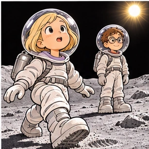
But Jack stood frozen. He wanted to get a good look at everything first.
He stared at the ground. He was standing in a layer of gray dust as fine as .
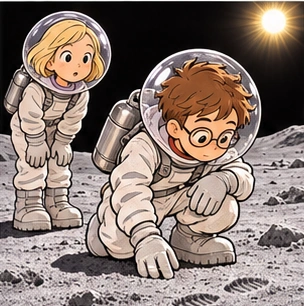
were everywhere. Jack wondered who had made them.
He reached into his pack for the moon book. To his surprise, it was as light as a feather!
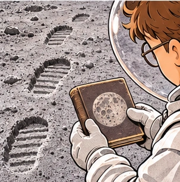
He found a picture of on the moon. He read:
The moon has no rain or wind to blow the dust around. So will never wear away naturally, not even in a billion years.
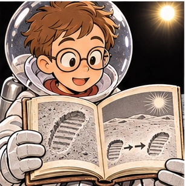
“Oh, man,” Jack said.
The moon was the stillest place he had ever, ever been. It was as still as a picture. And its stillness would never, ever end.
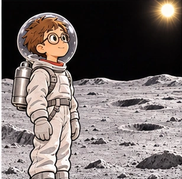
Jack stared at the ink-black sky. A lovely blue-and-white ball glowed far away.
Earth.
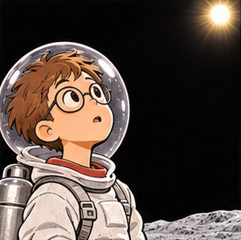
For the first time, it really hit Jack. They were in outer space.
“Look!” Annie cried, laughing.
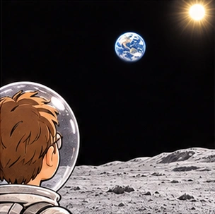
She past Jack—almost flying through the air. She landed on her feet. Then she jumped again.
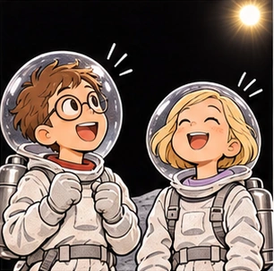
“I’m a moon rabbit,” she called.
Jack laughed. How does she do that? he wondered. He turned a page and read:
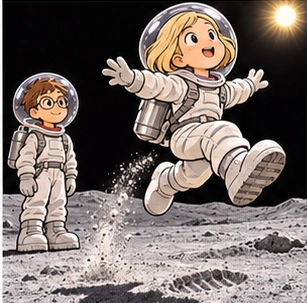
A person weighs less on the moon because of the moon’s low and lack of air. If you weigh 60 pounds on Earth, you would only weigh 10 pounds on the moon.
“Don’t just stand there reading!” said Annie, grabbing the book from Jack’s gloved hand. She tossed it into space.
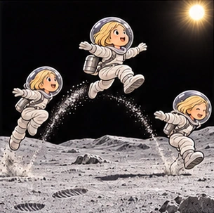
It flew far away.
Jack started after it.
He up and down. Boing! Boing! Boing! Now he felt as light as a feather.
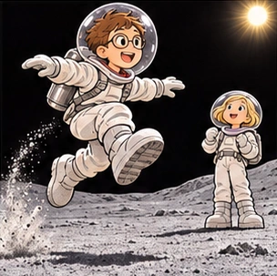
“Look!” he called to Annie. “I’m a moon rabbit, too.”
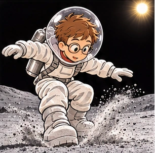
Where Jack’s boots hit the ground, moondust gracefully sprayed into space.
The book had landed at the edge of a crater.
When Jack reached it, he tried to stop. But his feet .
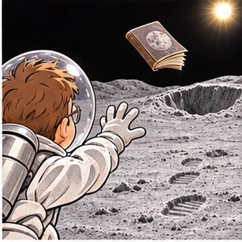
He fell right over and lay on his side. He tried to stand. But he was .
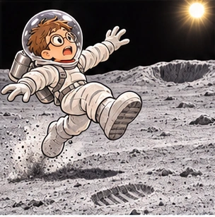
He tried again. But the dust was just too deep. And his spacesuit was too clumsy.
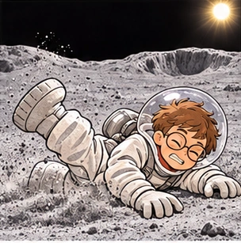
“You okay?” asked Annie.
“I can’t get up,” said Jack.
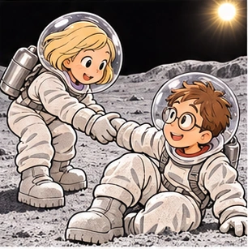
“You shouldn’t have been goofing off,” said Annie wisely.
“You goofed off first,” said Jack. “Now, help me up, please.”
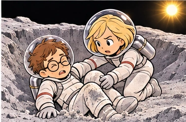
Annie started toward him.
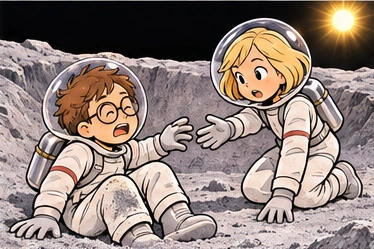